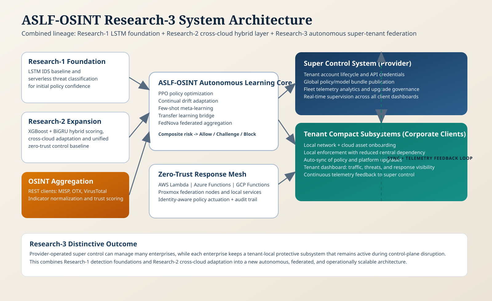
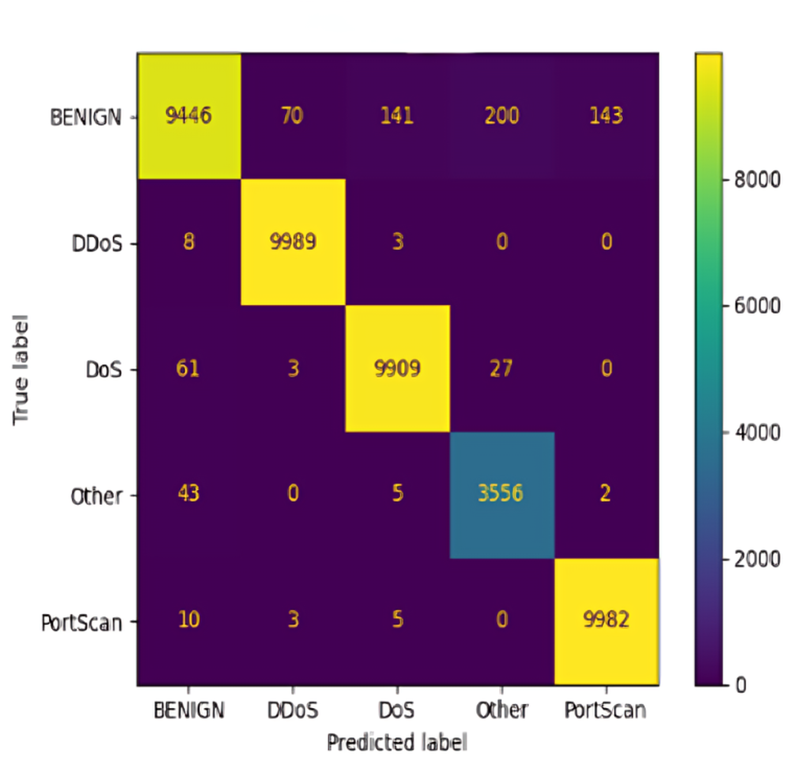
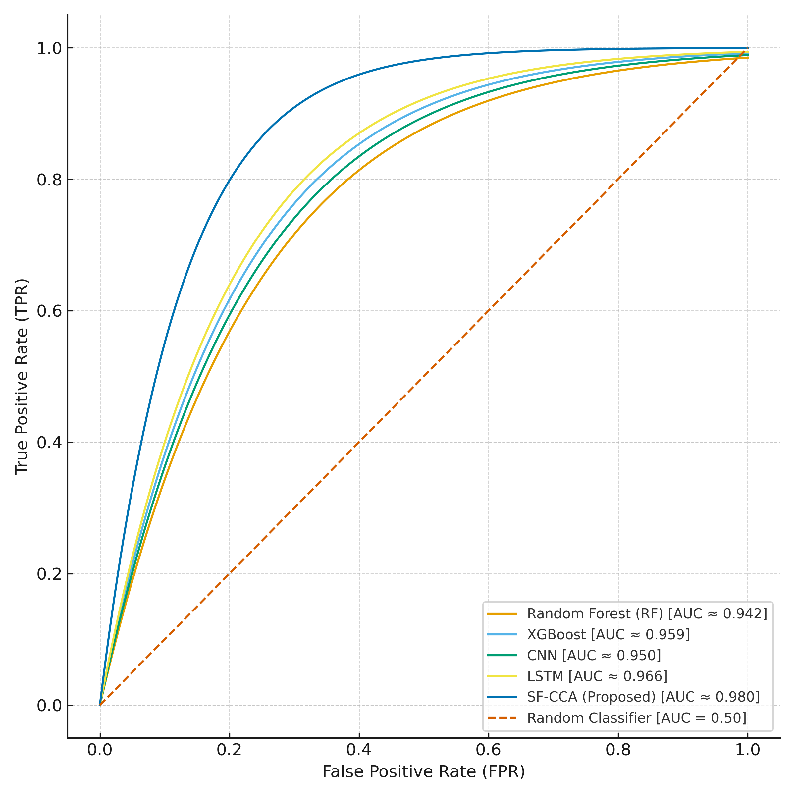

Problem and motivation
Traditional perimeter controls struggle with identity sprawl, short-lived workloads, and fragmented policy enforcement in multi-cloud serverless systems.
The research targets a missing capability: a serverless-native, AI-driven, end-to-end security architecture that can act across providers without losing zero-trust discipline.
Proposed architecture
The Research-3 architecture uniquely combines Research-1 and Research-2 lineage with a new super-control and tenant-compact federation model.

Evidence from evaluation

Low off-diagonal noise indicates strong class separation across the paper’s target labels.
Baseline comparison

Research-3 extends baseline lineage into autonomous OSINT-driven learning with super-to-tenant synchronized operations.
Artifact access
The PDF and LaTeX sources are intentionally not exposed in plaintext on this public site. Use the secure gate to reveal the encrypted archives after completing the access policy steps.